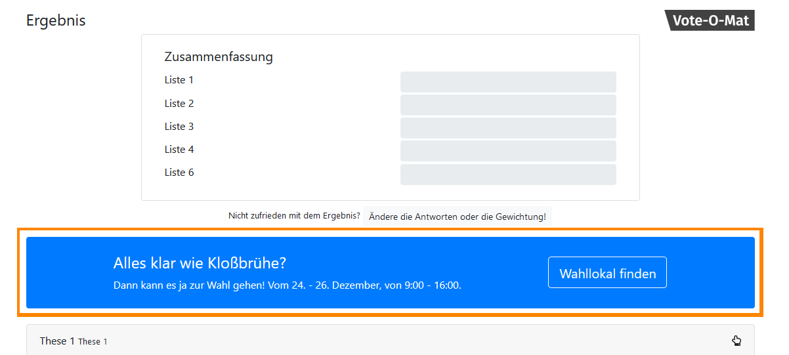

Vote-O-Mat - Setup
Moin!
Mit diesem hoffentlich praktischen Tool kannst du den Vote-O-Maten allgemein einrichten. Die Thesen und Antworten der Listen kannst du mit generator.html im Verzeichnis vom-instance erstellen.
Am Ende dieses Setups kommt dann ein kryptischer Text heraus, der im
config-Verzeichnis des Vote-O-Maten als
setup.json gespeichert werden muss. Keine Angst, am Ende wird das nochmal detailliert erklärt.
Schritt 1: Sprachen listen
Der Vote-O-Mat bietet im Gegensatz zum mahlowat eine Startseite, auf der Vote-O-Mat-Instanzen in verschiedenen Sprachen gelistet werden. Hier kannst du angeben, welche Sprachen auf der Startseite angezeigt werden sollen.
README erfährst du, wie das geht.
Jede Sprache wird zusätzlich zum Namen durch eine Flagge symbolisiert. Die Flaggen für Deutsch, Englisch und Französisch sind bereits verfügbar via de.svg, en.svg und fr.svg. Wenn du eine neue Flagge hinzufügen möchtest, platziere die entsprechende Datei im Verzeichnis img. Am besten nutzt du SVG-Grafiken von Wikipedia.
Wenn alle Sprachen angelegt sind, geht es mit einem Klick auf "Weiter" weiter.
Schritt 2: Branding
Der Vote-O-Mat kann mit einem Logo von z.B. der verantwortlichen Organisation versehen werden, um ihm einen offiziellen Charakter zu geben. Dieses Logo wird sowohl in den eigentlichen Vote-O-Mat-Instanzen als auch auf der Startseite gemeinsam mit einem textuellen Zusatz angezeigt.

img-Verzeichnis.
Schritt 3: Call to Action
Auf der Ergebnisseite können so genannte "Calls to Action", Aufforderungen zu Aktionen, angezeigt werden. Die Nutzenden können so z.B. direkt dazu animiert werden Briefwahl zu beantragen oder zu einer Übersicht der Listenprogramme oder verfügbaren Wahllokale geleitet werden.
Es gibt zwei Positionen, an denen je ein Call to Action angezeigt werden kann. Wähle aus, welche aktiviert werden sollen.
Der Call to Action besteht aus einem Titel, einem Text und einem Button, bei dessen Klick eine andere Website geöffnet werden kann.
Insgesamt können daher vier Angaben gemacht werden (siehe folgende Liste). Damit diese wie gewohnt in andere Sprachen übersetzt werden können, müssen sie direkt in den Sprach-Dateien, z.B. lang/de_de.js, lang/en_gb.js und lang/fr_fr.js, eingetragen werden.
Die folgenden Angaben können gemacht werden:
actions_top_title: Titel des Call to Action. Optional (Überschrift fehlt wenn keine Angabe).actions_top_text: Text des Call to Action. Optional (Text fehlt wenn keine Angabe).actions_top_button_caption: Beschriftung des Buttons. Optional (Button fehlt wenn keine Angabe).actions_top_button_link: Geöffneter Link bei Button-Klick. Optional (Button fehlt wenn keine Angabe).
Diese Angaben gelten für den oberen Call to Action. Die gleichen Angaben können auch für den unteren Call to Action gemacht werden. Ihre Bezeichnung beinhaltet dann bottom anstelle von top, also z.B. actions_bottom_title.
So werden die Angaben gemacht (für alle genutzten Sprach-Dateien wiederholen):
- Sprach-Datei öffnen (z.B. lang/de_de.js)
- Nach der gewünschten Angaben suchen (z.B. actions_top_title. Es sollte ein Eintrag wie
this.actions_top_title = ""auftauchen. - In das
""den gewünschten Inhalt eintragen (z.B."Meine Tolle Überschrift"). Für die Angabe des Button-Links den zu öffnenden Link eintragen (z.B.actions_top_button_link = "https://example.com/deutscher-button-klick"). - Für alle gewünschten Angaben in allen genutzten Sprach-Dateien wiederholen.
Schritt 4: Statistiken
Der Vote-O-Mat kann anonyme Statistiken zur Nutzung erstellen. Damit sind grobe Aussagen zum allgemeinen Nutzungsverhalten im zeitlichen Verlauf möglich.
Die Datensammlung funktioniert so: Im Vote-O-Maten gibt es verschiedene "Checkpoints". Ein Checkpoint kann zum Beispiel der Moment sein, in dem die Ergebnisse angezeigt werden. Das Statistik-Modul speichert, wann welcher Checkpoint erreicht wurde. Zu keinem Zeitpunkt werden durch den Vote-O-Maten nutzerbezogene Daten oder Daten zu den eingegebenen Meinungen erhoben.
Das Statistik-Modul bereitet die gesammelten Daten visuell auf. Außerdem können sie zur weiteren Analyse heruntergeladen werden.
Im Folgenden kannst du einstellen, welche Checkpoints aktiviert werden sollen.
Die Statistiken können nach Sprachen getrennt erfasst werden. Das geschieht, indem das Statistik-Modul jeden gespeicherten Checkpoint mit einem Präfix versieht, das die Sprache des verwendeten Vote-O-Maten angibt.
Im Folgenden kannst du einstellen, welche Sprache welches Präfix erhalten soll. Wenn die Statistiken nicht nach Sprachen getrennt erstellt werden sollen, lösche alle Präfixe.
Empfohlene Präfixe: "de-" für Deutsch, "en-" für Englisch und "fr-" für Französisch.
vom-statistics erreichbar? Erfahre mehr
Geschafft! Also fast.
Im untenstehenden Textfeld findest du deine Vote-O-Mat-Konfiguration.
Dieser Text muss jetzt genau so in die Datei
setup.json im Verzeichnis
config des Vote-O-Maten kopiert werden. Falls diese Datei nicht existiert, erstelle sie einfach. Achte darauf, dass die Datei im
UTF-8-Format gespeichert wird!